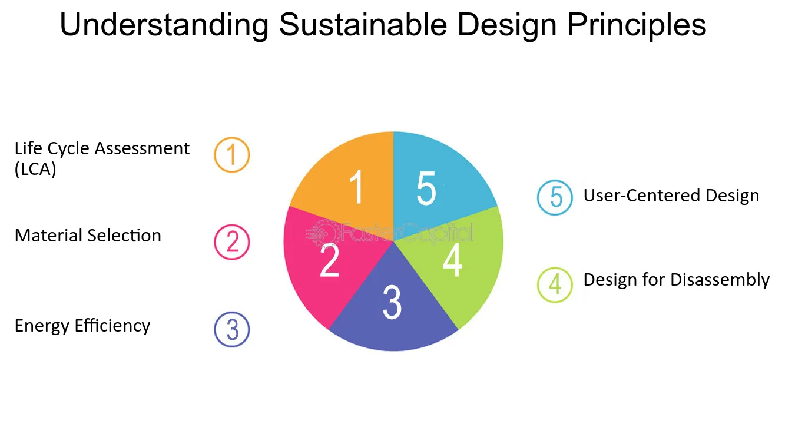

LIFESPAR is a set of cloud native architectural principles that stands for:
- Latency-aware
- Instrumented
- Failure-aware
- Event-driven
- Secure
- Parallelizable
- Automated
- Resource-consumption-aware
Benefits
- Design to Fail: Being aware of failure points, it promotes a design-to-fail strategy.
- Latency: It encourages a latency-driven testing approach to ensure the system meets expected latency numbers.
- Automation: It promotes automation by encouraging the building of self-maintainable services that can be automatically started and stopped.
- Decoupled Services: It promotes developing decoupled, independent services that are event-driven. This further simplifies scaling and makes the whole system resilient to failures.
Tangible Things to Do for Adoption
- Analyse Legacy Applications: Analyse the existing legacy application and identify boundaries to create decoupled services. Encourage a microservices-driven architecture.
- Identify Failure Scenarios: Identify failure scenarios and points and add mechanisms for resiliency.
- Instrumentation: Integrate external instrumentation tools or write instrumentation logic in your code to generate sufficient and relevant data about your APIs.
- Security and Automation: Use necessary cloud services to make your services secure and automated.